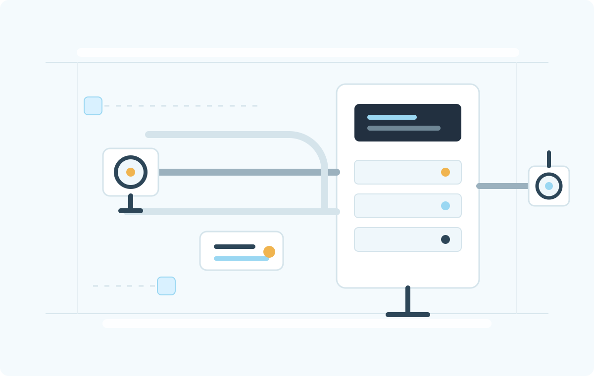

Consulting and risk mapping
Review the process, gas risk, ventilation, hazardous classification and alarm philosophy before selecting equipment.
Agents for NIRA Instruments in South Africa
PressureFlip Solutions consults, supplies, installs and maintains LEL, ATEX and fire & gas detection systems for facilities where explosive atmospheres are a real operational risk.

What PressureFlip Handles
We work where a standard "supply only" approach is not enough: solvent vapour, methane, LPG, hydrogen, heat, fire and hazardous-area instrumentation. The offer covers consulting, equipment selection, installation support, commissioning, maintenance and after-sales service.
Review the process, gas risk, ventilation, hazardous classification and alarm philosophy before selecting equipment.
Supply NIRA LEL monitoring systems and complementary fire & gas detection products for high-risk areas.
Support detector placement, panels, alarm outputs, production interlocks, loop checks and site handover.
Calibration planning, fault response, spare parts coordination and long-term service routines for installed systems.
Represented Technology
NIRA's portfolio is built around LEL monitoring, energy-saving air recirculation control and fast residual solvent analysis for printed and flexible packaging environments.
Core LEL platform
Infrared LEL monitoring architecture for continuous solvent concentration control in hazardous production processes.
Flame ionization
FID LEL monitoring for demanding applications where fast, precise hydrocarbon concentration measurement is required.
Packaging quality
Gas chromatograph systems for flexible, coated and laminated printed materials, supporting rapid residual solvent checks.
Fire & Gas Detection Portfolio
Combustibles, toxic gases, oxygen depletion/enrichment and hazardous-area detector options.
Zone 1 / 21 and EN54-5 heat detector options for fire-risk and hazardous-area applications.
Gas detection panels, flame detectors, portable gas detection and visual-acoustic alarm devices.
South African Focus
Methane, hydrogen, battery rooms, LPG, fuel storage and Zone 1 / Zone 2 detector selection.
Printing, coating, drying ovens, solvent vapour control, air recirculation and residual solvent analysis.
LPG/natural gas leaks, carbon monoxide, heat detection and integrated alarms for hospitality and food production.
Boiler rooms, laboratories, chemical stores, warehouses, oil and gas storage and service plant rooms.
Inspection-ready thinking
Start with the process risk
For mines, packaging plants, kitchens and hazardous industrial sites across South Africa.